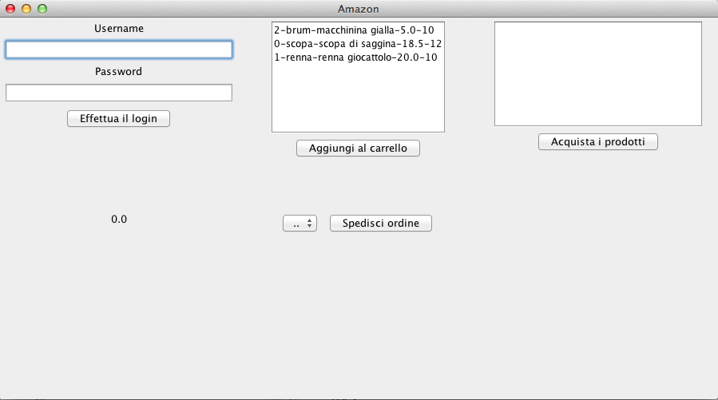
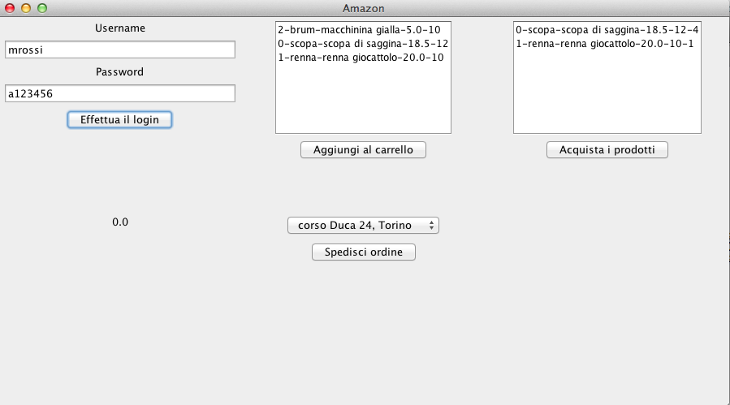
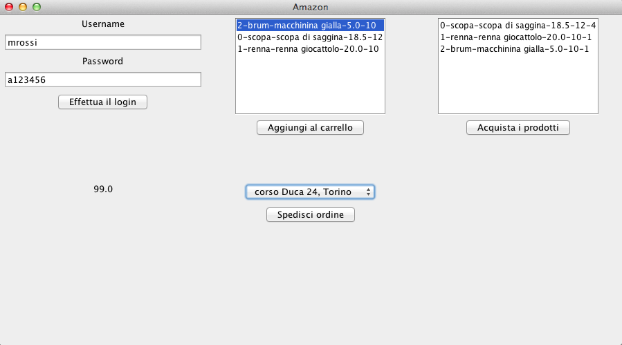
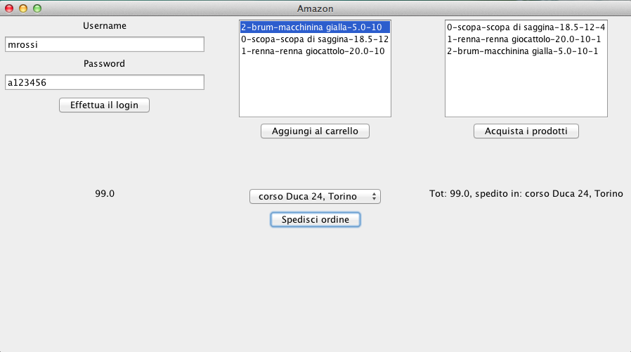

Amazon
Sviluppare un programma per l'acquisto di prodotti, in un sistema di e-commerce.
Tutte le classi si trovano nel package amazon.
R1: Prodotti
Il programma funziona attraverso la classe principale Amazon.
È possibile aggiungere nuovi prodotti tramite il metodo aggiungiProdotto() della classe Amazon. Tale metodo riceve come parametri nome, descrizione e prezzo di un prodotto, assegna automaticamente un codice (a partire da 0), crea un oggetto di tipo Prodotto e ritorna il codice assegnato al prodotto. Per ottenere un prodotto dato il codice del prodotto è possibile utilizzare il metodo getProdotto della medesima classe, che, ricevuto il codice di un prodotto, restituisce un riferimento all'oggetto di classe Prodotto, oppure genera una eccezione ErrProdottoInesistente, qualora non sia possibile risalire a nessun prodotto.
Inoltre, per ogni prodotto è possibile impostarne la disponibilità tramite il metodo impostaDisponibilitaProdotto() della classe Amazon. Tale metodo riceve come parametri il codice di un prodotto e la disponibilità e aggiorna la disponibilità del relativo prodotto (eventualmente sommando alla disponibilità precedente la nuova disponibilità, qualora la disponibilità precedente sia diversa da zero). In maniera simile al metodo getProdotto, tale metodo genera una eccezione ErrProdottoInesistente, qualora non sia possibile risalire al prodotto.
I metodi getCodice(), getNome(), getDescrizione(), getPrezzo(), getDisponibilita() della classe Prodotto permettono di ottenere informazioni sul codice del prodotto, il nome, la descrizione, il prezzo e la disponibilità del prodotto.
R2: Account
Oltre ai prodotti, il sistema memorizza anche informazioni sugli account. In particolare, un account può essere inserito tramite il metodo creaAccount() della classe Amazon. Tale metodo riceve come parametri nome, cognome, username e password, crea un oggetto di tipo Account e, se l'operazione va a buon fine, ritorna lo username associato. Qualora, invece, sia già presente nel sistema un account con lo username specificato, tale metodo genera una eccezione di tipo ErrAccountGiaEsistente.
Per ottenere un account, è possibile utilizzare il metodo getAccount della medesima classe. Tale metodo riceve come parametri username e password e, se lo username è contenuto nel sistema, e se è stata specificata la password corretta, restituisce l'account corrispondente. Qualora, invece, i dati specificati siano errati, genera una eccezione ErrDatiErrati.
Per ogni account è inoltre possibile specificare uno o più indirizzi di spedizione, tramite il metodo aggiungiIndirizzoAdAccount() della classe Amazon. Tale metodo riceve come parametri un account e la stringa contenente l'indirizzo di spedizione, e aggiunge l'indirizzo all'account (ignorando la richiesta, se l'indirizzo è già stato specificato, per quell'account).
I metodi getNome(), getCognome(), getUserName(), getPassword(), elencoIndirizziSpedizione() della classe Account permettono di ottenere informazioni sul nome, cognome, username e password, e l'elenco degli indirizzi associati.
R3: Acquisti
Gli utenti, tramite il loro account, possono effettuare acquisti. In particolare, essi possono aggiungere il prodotto al loro carrello tramite il metodo aggiungiProdottoACarrelloAccount(). Tale metodo riceve come parametri un account, un prodotto, e una quantità. Se la quantità richiesta è inferiore alla quantità disponibile (cioè se c'è disponibilità per quel prodotto), il prodotto viene aggiunto al carrello dell'account, altrimenti la richiesta viene ignorata.
È possibile calcolare il totale del carrello tramite il metodo getTotaleCarrello() della classe Account, che calcola l'importo che una persona deve pagare quando effettua il checkout.
R4: Elenchi prodotti
Per ogni account, è possibile ottenere la lista dei prodotti tramite i metodi elencoProdottiInOrdineDiInserimento e elencoProdottiPerImportoCrescente (della classe Account), che restituiscono, rispettivamente una collezione di prodotti in ordine di inserimento (cioè di aggiunta al carrello), e una collezione di prodotti ordinati per importo crescente.
È inoltre possibile ottere la lista di tutti i prodotti inseriti nel sistema tramite il metodo elencoProdottiPerImportoCrescente() della classe Account, che restituisce anch'esso i prodotti ordinati per importi crescenti.
R5: Interfaccia Grafica
Realizzare l'interfaccia grafica simile alla
seguente:

Quando si avvia l'applicazione, l'utente deve specificare username e password (riquadro in alto a sinistra). Se i dati forniti sono corretti, il carrello (riquadro in alto a destra) viene popolato con gli elementi eventualmente già aggiunti al carrello (che l'utente non aveva ancora provveduto ad acquistare), e la combo box relativa agli indirizzi (in basso al centro) viene popolata con gli indirizzi specificati (Figura 2). Infine, nel riquadro in alto al centro, vengono mostrati tutti i prodotti inseriti nel sistema, ordinati dal più economico al più caro (i prodotti vengono mostrati sia che l'utente abbia effettuato l'accesso, sia nel caso in cui questo non sia ancora loggato).
NB: i prodotti devono essere riportati nel seguente formato codice-nome-descrizione-prezzo-quantità (come da figura).

Un utente, qualora voglia acquistare un prodotto, può selezionarlo dalla lista riportata nel quadrante in alto al centro, e cliccare sul pulsante "Aggiungi al carrello". L'interfaccia grafica verrà automaticamente aggiornata, aggiungendo il prodotto selezionato al carrello (Figura 3, riquadri in alto al centro e a sinistra).
Qualora un utente volesse procedere all'acquisto, può cliccare sul bottone "Acquista i prodotti", che permette di calcolare il totale del carrello, e lo fa visualizzare nel riquadro in basso a sinistra (Figura 3).
Infine, per effettuare la spedizione, l'utente può selezionare l'indirizzo di preferenza dalla combo box posta nel riquadro in basso al centro, e poi cliccare sul pulsante "Spedisci ordine".
NB: i prodotti del carrello devono essere riportati nello stesso formato utilizzato per riportare i prodotti presenti nel sistema, ma la quantità deve far riferimento alla quantità aggiunta al carrello, e non alla disponibilità di prodotti in tutto il sistema (come da figura).

Dopo questa operazione, nel quadrante in basso a destra verrà mostrato un messaggio di conferma formattato nel seguente modo: "Tot: X, spedito in: YYY", con X totale del carrello e Y indirizzo (solo via, città, etc., senza concatenare nome e/o cognome del proprietario dell'account) (Figura 4).

N.B. usare gli attributi forniti per consentire il test della classe mediante JUnit.
N.B. non è necessario aggiornare la disponibilità del prodotto nel sistema, una volta che l'utente ha provveduto all'acquisto.
Suggerimenti
Per la scelta dell'indirizzo da utilizzare si usi un JComboBox ed il suo costruttore JComboBox(Object[]).
Per la lista di prodotti si usi un JList.
Per aggiornare l'elenco si sfrutti il metodo setListData(Object[]).
L'elemento selezionato in una lista può essere ottenuto con il
metodo getSelectedValue().
L'elemento selezionato in una combo box può essere ottenuto con il
metodo getSelectedItem().